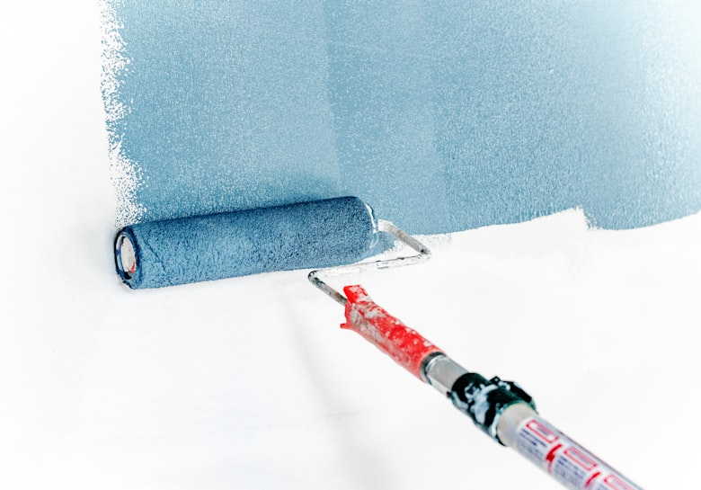

Meisterbetrieb in Essen & Umgebung
Ihr Maler in Essen – Farbe, die Räume verwandelt
Ein neuer Anstrich verändert die gesamte Wirkung eines Raumes. Als Malerbetrieb mit Meisterqualität kümmern wir uns in Essen und Umgebung um Wände, Decken und Fassaden – von der sorgfältigen Vorbereitung bis zum letzten Pinselstrich.

Unsere Arbeitsweise
Saubere Kanten, gleichmäßige Flächen, langlebiges Ergebnis
Gute Malerarbeit beginnt lange vor dem ersten Anstrich: Risse werden geschlossen, alte Beschichtungen entfernt und Oberflächen grundiert. Erst dann tragen wir hochwertige, umweltverträgliche Farben und Lacke auf, die optisch und funktional überzeugen – und Oberflächen dauerhaft vor Feuchtigkeit, Abrieb und Witterung schützen.
Ob kreative Wandgestaltung im Wohnzimmer, dezente Farbkonzepte für Geschäftsräume oder robuste Außenanstriche: Wir stimmen Technik und Material individuell auf Ihr Projekt ab. Unser Team arbeitet sauber, termingerecht und mit geschultem Blick für Details.
- Innenanstriche für Wohn- & Geschäftsräume
- Kreative Wandgestaltung, Farbkonzepte & Spachteltechniken
- Lackierarbeiten an Türen, Zargen & Heizkörpern
- Tapezierarbeiten & Untergrundvorbereitung
- Robuste, witterungsbeständige Außenanstriche
- Renovierungsanstriche bei Mieterwechsel
- Abdecken, Schutz & besenreine Übergabe inklusive
Häufige Fragen zu Malerarbeiten
Gut zu wissen
Muss ich die Räume vorher leerräumen?
Nein, das ist meist nicht nötig. Wir rücken Möbel zusammen, decken alles sorgfältig ab und schützen Böden und Einbauten. Nach getaner Arbeit übergeben wir die Räume besenrein.
Welche Farben verwenden Sie?
Wir arbeiten mit hochwertigen Marken-Farben und -Lacken, die emissionsarm und langlebig sind. Für Allergiker, Feuchträume oder stark beanspruchte Flächen wählen wir das jeweils passende Produkt und beraten Sie transparent.
Übernehmen Sie auch Schönheitsreparaturen bei Mieterwechsel?
Ja. Für private Eigentümer und Hausverwaltungen übernehmen wir Renovierungsanstriche bei Mieterwechsel – schnell, sauber und zu planbaren Konditionen.